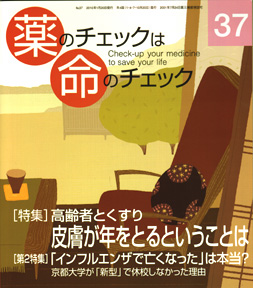

No.37 特集 高齢者とくすり （第2特集 「インフルエンザで亡くなった」は本当？）2010年1月 発行
「高齢者とくすり」第1回は皮膚疾患を取り上げました。しかし、取材を進めるうちに「くすり」からドンドン離れて
いってしまいました。と言うのも、薬剤治療をほとんど必要としない、ということになってしまったのです。なぜ
そうなのか？は本文をお読みください。
もう一つの特集は「インフルエンザ」です。35号や36号でも取り上げましたが、
いわゆる「新型」インフルエンザを巡るおかしな風潮がおさまりそうもなく、「ほんまもんの情報」を
提供することで少しでも風穴を開けたいと、しつこく特集しています。
第3特集は2008年11月に開催した第6回医薬ビジランスセミナーの分科会のうち
「アトピー性皮膚炎」を次号と2回に分けて誌上再録します（注）。
注：セミナー報告関連は、33号で「疫学入門：喫煙と肺がん」、34号で「基調講演：浜六郎」、 36号で「インフルエンザ」を再録しています。
もくじ
特集 高齢者とくすり（１）皮膚疾患とくすり
■ 何歳からが高齢者？
■ 専門医に聞く ー 隅田さちえさん
入浴しないのが皮膚の健康のため、って本当？
■ 質素で単純がいちばん 高齢者の皮膚を健康に保つために
■ グループホーム訪問 皮膚がきれいになった
■ おもな外皮膚用剤の強さ一覧
第2特集 インフルエンザ
■ 子どもたちはタミフルなしで大丈夫 高木泰子
■ 京都大学が休校しなかった理由 田中真介
■ 「インフルエンザで亡くなった」は本当か？ 浜 六郎
■ 厚生労働省との面談報告 坂口啓子
■ WHO、CDCは水戸黄門の印籠か？ 木元康介
■ 中外製薬協賛：座談会
■ スペインかぜの死亡原因はアスピリン 編集部
■ 今回のインフルエンザ“狂騒”に思うこと 薬害タミフル脳症被害者の会
第6回医薬ビジランスセミナーから
■ アトピーの自然治癒に向けて 編集部/隅田さちえ
■ アトピー性皮膚炎治療ガイドラインの問題点 隅田さちえ
■ 小児科医の立場から：アトピー性皮膚炎と栄養 谷口洋子
連載
■ 医師国家試験に挑戦しよう！ 木元康介
■ リレーエッセー ナチュラル派の言い分 向井万起男
■ コーヒー無礼区 坂口啓子
■ みんなのやさしい生命倫理（37）生老病死（7） 谷田憲俊
その他
■ 医師国家試験に挑戦しよう！ 解答と解説
■ 質問箱（１）若者の尿蛋白に治療は必要か？
（２）インフルエンザワクチンでウイルス量が減少？
（３）リレンザの危険性は？
（４）子どもがインフルエンザに罹ったとき「5日間休む」でよいか？
■ 読者の声
■ 書評
■ 用語の解説（記事に出てくる医学用語や統計学用語などを解説）
■ 次号予告
■ バックナンバー案内／常備店
■ 書籍申込用紙
■ 編集後記